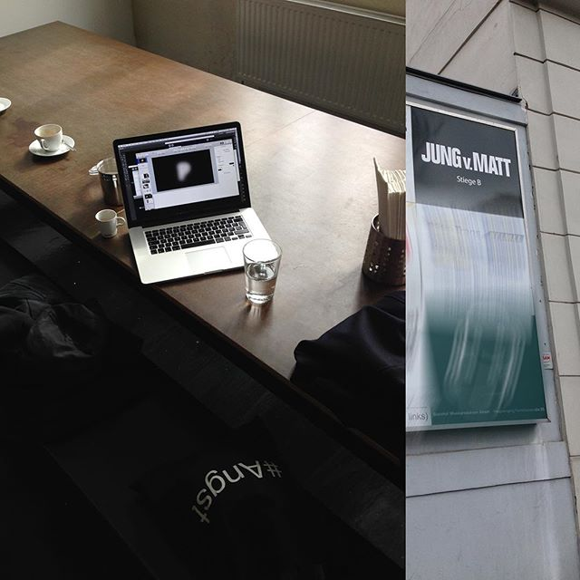
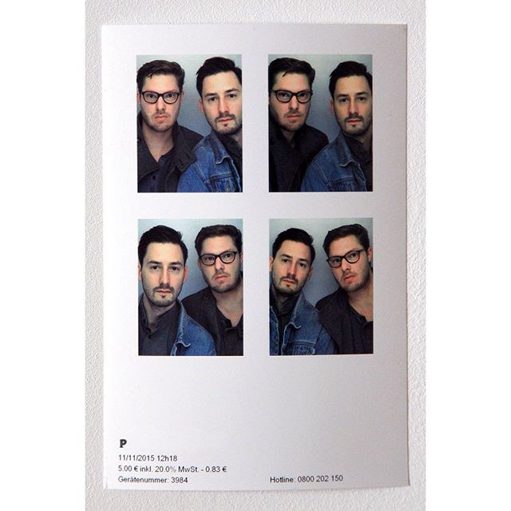

process.studioFollow 116 posts 1,596 followers 2 following Process Studio for Art and Design based in Vienna. process.studio Video Video Video Video Video Post Video Video Video Video Video Video Video Video Post Video Post Post Video Video Post Video Video Video Video Video Video Video Video Video  Video Video 

![We’re looking forward to giving a talk at the Forward Festival in Vienna! ✌️
—
https://www.facebook.com/events/759261967600180/
—
Forward Festival — April 27
https://forward-festival.com/vienna/speaker/design-made-in-austria
—
Thank you @design_made_in_austria — with @isabellathaller and @thesomniloquist — as well as Paula Scher from @pentagramdesign @forwardfestivals —
#forwardfestival #talk #design #conference #designmadeinaustria #processstudio #generativedesign #digitalart #procedural #design #art #vienna #wien #studioprocess](./index_files/30087155_1870277016318278_4744101041279074304_n.jpg)

![Procedural Artworks for the MIT School of Science (link in bio)
——
We created possibly habitable exoplanets. Here’s a small selection depicting the visual outcome.
——
For the new website of MIT’s School of Science we crafted procedural Artworks for a series of recent scientific findings: Keeping Aging Brains Healthy, Detecting Gravitational Waves, Editing Ourselves, Searching for Habitable Worlds
——
#gravitationalwaves #crispr #tess #ligo #generative #design #procedural #visualization #mesh #art #wien #vienna #line #geometry #interactive #study #waves #code #art #visuals #shader #processstudio @mitpics #mit #schoolofscience #science #web #massachusettsinstituteoftechnology #studioprocess](./index_files/28766434_556352761402537_8507703238345097216_n.jpg)
![Procedural Artworks for the MIT (link in bio)
——
For the new website of MIT’s School of Science we crafted procedural Artworks for a series of recent scientific findings: Keeping Aging Brains Healthy, Detecting Gravitational Waves, Editing Ourselves, Searching for Habitable Worlds
——
Have a look at all of these in motion: https://science.mit.edu/
——
Website by the great @Upstatement in Boston.
——
#gravitationalwaves #crispr #tess #ligo #generative #design #procedural #visualization #mesh #art #wien #vienna #line #geometry #interactive #study #waves #code #art #visuals #shader #processstudio @mitpics #mit #schoolofscience #science #web #massachusettsinstituteoftechnology #studioprocess](./index_files/28763116_154583038540414_2536647726997700608_n.jpg)
![Procedural Artworks for the MIT
——
Searching for habitable worlds: https://process.studio/works/searching-for-habitable-worlds/
——
For the new website of MIT’s School of Science we crafted procedural Artworks for a series of recent scientific findings. ——
Searching for habitable worlds:
In February 2017, NASA’s Spitzer Space Telescope revealed the first known system of seven Earth-size planets around a single star. Three of these planets are firmly located in the habitable zone, the area around the parent star where a rocky planet is most likely to have liquid water — the key to life as we know it.
——
MIT scientists are continuing to use new methods and instrumentation to seek out new worlds that could show we are not alone in the universe.
——
#gravitationalwaves #crispr #tess #ligo #generative #design #procedural #visualization #mesh #art #wien #vienna #line #geometry #interactive #study #waves #code #art #visuals #shader #processstudio @mitpics #mit #schoolofscience #science #web #massachusettsinstituteoftechnology](./index_files/28764583_1947958532199886_6615601055889620992_n.jpg)
![NEW WORK: Procedural Artworks for the MIT
https://process.studio/works/mit-school-of-science/ (link in bio)
For the new website of MIT’s School of Science we crafted procedural Artworks for a series of recent scientific findings. Great collaboration with @upstatement in Boston!
#gravitationalwaves #crispr #tess #ligo #generative #design #procedural #visualization #mesh #art #wien #vienna #line #geometry #interactive #study #waves #code #art #visuals #shader #processstudio @mitpics #mit #schoolofscience #science #web #massachusettsinstituteoftechnology](./index_files/28753091_202715536980125_8373668630570729472_n.jpg)
![New Project online: AESTHETICS OF CHANGE
(link in bio)
—
Interactive installation for MAK - Austrian Museum of Applied Arts / Contemporary Art as part of Angewandte’s exhibition that casts a glance back onto 150 years of the University’s history. Visitors are invited to share their thoughts, ideas and visions for the future.
—
Exhibition is still open!
December 15 2017 — April 15 2018
—
https://process.studio/works/aesthetics-of-change/
—
#mak #angewandte #exhibition #installation #generative #design #art #vienna #wien #studioprocess #aesthetics #aestheticsofchange @dieangewandte @dieangewandte_alumni @mak_vienna #ästhetikderveränderung #angewandtekunst #appliedarts #architecture #contemporaryart #design #videoart #graphicdesign #150JAHREANGEWANDTE](./index_files/27890678_205055026904443_1670886060764168192_n.jpg)
![a few more color studies
—
#generative #design #procedural #visualization #vertex #edge #mesh #wien #vienna #studioprocess #noise #light #gradient #geometry #interactive #prototype #code #art #visuals #shader #process #color #study #material
—
@pagemag @designspiration @ratedmodernart @abstract.mag @feltzine @visualgraphc @fubiz @beeta.es @nace.network @supplyanddesign @graphicroozane @graphicdesignblg @vanila.design @simply.cool.design @thedesigntalks @graphicgang @subfoldr @lucidscreen @1milliondiamonds @artcube @thergallery @thedesignfix @yesladypheonix @xuxoe @digital.artworks @mindsparklemagazine @visualjournal.it @itsnicethat @visuelle.co.uk](./index_files/26866492_214531112456271_6850032985224249344_n.jpg)
![Check out our installation for the exhibition “Aesthetics of Change” at the Austrian Museum of Applied Arts/Contemporary Art. Find our piece in the “Future” part of the exhibition.
—
Austrian Museum of Applied Arts/Contemporary Art
Stubenring 5, 1010 Vienna, Austria
—
December 15 2017 — April 15 2018
—
Open Hours
Tue 10 a.m.–10 p.m., Wed–Sun 10 a.m.–6 p.m., Mon closed
—
#mak #angewandte #exhibition #installation #generative #design #art #vienna #wien #studioprocess #aesthetics #aestheticsofchange @dieangewandte @dieangewandte_alumni @mak_vienna #ästhetikderveränderung #angewandtekunst #appliedarts #architecture #contemporaryart #design #videoart #graphicdesign #150jahreangewandte](./index_files/25035928_916897135142380_5259356151677452288_n.jpg)
![We created a little installation for the exhibition “Aesthetics of Change” at the Austrian Museum of Applied Arts/Contemporary Art. Opening is this Thursday at 7pm. We’d love to see you there! Facebook event: https://goo.gl/DyzeHD
#mak #angewandte #exhibition #installation #generative #design #art #vienna #wien #studioprocess #aesthetics #aestheticsofchange @dieangewandte @dieangewandte_alumni @mak_vienna #ästhetikderveränderung #angewandtekunst #appliedarts #architecture #contemporaryart #design #videoart #graphicdesign](./index_files/25009677_1825499807740182_5152735959376199680_n.jpg)
![The case study of our Archdiploma identity is now online: a universe full of works. Including a closer look at the custom design tool we created to allow a dynamic identity incorporating 777 diploma works. In this video you can see one of the experiments with type.
—
Link in bio.
—
#identity #branding #studioprocess #archdiploma #archdiploma17 #website #cataloge #bag #invitation #envelope #poster #generativedesign #design #graphicdesign #processing #3d #editorial #generative #visual #wien #vienna #moritzresl #martingrödl #video #type #typography #particles](./index_files/24177610_136750263652025_6238506255900475392_n.jpg)

![🏅🏆 NEW PROJECT ONLINE & NEW AWARD 🏆🏅
—
We worked on Wienerberger AG’s newest sustainability report and created a graphical system to design the cover and artworks to be used inside the report. Link in bio.
—
This monday, Wienerberger AG was awarded first place at the Austrian Sustainability Reporting Award (ASRA)!
—
Congrats to Wienerberger AG and Brainds, who are responsible for the report design!
—
#generative #generativedesign #procedural #design #art #editorial #cover #coverart #3d #visualization #graphicdesign #processing #visual #vienna #wien #studioprocess #wienerberger #sustainability #report #print #sphere #plant #growing #award #editorial #colors #gestaltung #technology #science](./index_files/23507696_531058980591088_5849706544748298240_n.jpg)
![Poster campaign for Brunnenpassage in Vienna
Link in bio.
Based on the most important values from its 10-year history, we created visuals, depicting one word at a time paired with a sometimes contradicting illustration or photograph. Besides posters custom-made postcards were distributed in clubs and bars throughout Vienna featuring part of the universal declaration of human rights in six languages.
#poster #plakat #wien #brunnenpassage @brunnenpassage #anniversary #illustration #photography #design #graphicdesign #vienna #humanrights #artsocialspace @tobiasbatik #kunstwirkt #ottakring #charity @caritaswien #caritas #studioprocess](./index_files/23421920_1154130214720847_3723578792698970112_n.jpg)
![#generative #design #graphicdesign #procedural #art #processing #vienna #studioprocess #generativedesign #particles #3d #artwork #dots #editorial #artwork #dot #custom #customsoftware #noise #visualization #visual #wien #gestaltung #advertisement #ad #poster #abstract #code #algorithm #gestaltung
@pagemag @designspiration @ratedmodernart @abstract.mag @feltzine @subfoldr @lucidscreen @1milliondiamonds @artcube @thergallery @thedesignfix @yesladypheonix @xuxoe @digital.artworks @visualjournal.it @itsnicethat @visuelle.co.uk @mindsparklemagazine @visualgraphc @fubiz @beeta.es @nace.network @supplyanddesign @graphicroozane @graphicdesignblg @vanila.design @simply.cool.design @thedesigntalks @graphicgang](./index_files/23161422_126306721396013_2095151176600256512_n.jpg)
![#generative #design #graphicdesign #procedural #art #processing #vienna #studioprocess #generativedesign #particles #3d #artwork #dots #editorial #artwork #dot #custom #customsoftware #noise #visualization #visual #wien #gestaltung #advertisement #ad #poster #abstract #code #algorithm #gestaltung
@jessicavwalsh @pagemag @designspiration @ratedmodernart @abstract.mag @feltzine @subfoldr @lucidscreen @1milliondiamonds @artcube @thergallery @thedesignfix @yesladypheonix @xuxoe @digital.artworks @visualjournal.it @itsnicethat @visuelle.co.uk @mindsparklemagazine @visualgraphc @fubiz @beeta.es @nace.network @supplyanddesign @graphicroozane @graphicdesignblg @vanila.design @simply.cool.design @thedesigntalks @graphicgang](./index_files/22860233_2066147140281505_769186191256846336_n.jpg)

![Alongside the Archdiploma 2017 identity we designed a catalogue with 224 pages featuring selected projects, portraits and interviews. Furthermore, we designed custom artworks that are used throughout the publication.
#archdiploma #archdiploma17 #archdiploma2017 #exhibition #vienna #design #graphicdesign #identity #studioprocess #generative #generativedesign #processing #procedural #artwork #poster #dynamic #flyer #tuwien #architecture #spatialplanning #architektur #wien #catalogue #cover #print #editorialdesign](./index_files/22344967_500901396944724_2825130630046547968_n.jpg)
![We designed the identity of this year’s Archdiploma exhibition: A Universe full of individual works. Opening is on thursday, October 12 at 7pm. Drop by if you’re around!
TVFA-Halle
Erzherzog-Johann-Platz 1
1040 Vienna
Website: www.archdiploma.at
Event: https://www.facebook.com/events/131990680776862/
#archdiploma #archdiploma17 #archdiploma2017 #exhibition #vienna #design #graphicdesign #identity #studioprocess #generative #generativedesign #processing #procedural #artwork #poster #dynamic #flyer #tuwien #architecture #spatialplanning #architektur #raumplanung](./index_files/22351619_1896353194015775_1136746936942985216_n.jpg)
![Yes, time to celebrate again: More awards! One Gold and two Bronze Awards at the ARC Awards in New York! 🏅🏆 The Annual Report 2016 for Wienerberger AG just got awarded with three more awards at the International ARC Awards in New York! We worked on this project together with Brainds!
Previously, it was already awarded a LACP Gold Award.
#award #annualreport #generative #design #graphicdesign #procedural #art #processing #vienna #studioprocess #generativedesign #digital #wienerberger #artwork #editorial #cover #coverart #gold #wien](./index_files/22278258_1483202235097818_2072452287325798400_n.jpg)


![We designed a visual system to generate plant-inspired, growing structures for Wienerberger AG’s newest Sustainability Report. Here is an example of how we create/grow shapes that evolve on a cone-like surface. The project is a collaboration with Brainds.
#generative #generativedesign #procedural #design #art #editorial #cover #coverart #3d #visualization #graphicdesign #processing #visual #vienna #wien #studioprocess #wienerberger #sustainability #report #print #sphere #plant #growing #cone #video](./index_files/19955310_138131076768703_5917271972361797632_n.jpg)


![If you want to read about who we are, how we work and where we draw some of our inspiration from, be sure to check out our feature in PAGE's studio portrait series. Please follow the link in bio. (German Article) http://page-online.de/kreation/agenturportraet-process-studio/
⠀⠀
#generative #design #generativedesign #graphicdesign #procedural #art #science #processing #digital #editorial #exhibition #studioprocess #cover #coverart #simulation #visual #visualization #vienna #wien #interview #portrait #agency @pagemag #3d #poster #openframeworks #glsl #touchdesigner #studio](./index_files/19764828_225136214674439_6255275886988230656_n.jpg)


![From prototypes to complex products for special applications – the potential of 3D printing is almost unlimited. Layer by layer, the workpiece takes shape. As shown in this image, objects are created in a computer-controlled additive process by laying down successive layers of material. The visual presentation is reminiscent of wire-frame models used in printing.
Commissioned Artworks/Generative Design for Wienerberger AG
https://process.studio/works/wienerberger/ (Link in bio)
#generative #design #graphicdesign #procedural #art #processing #editorial #graphic #wireframe #abstract #wienerberger #annualreport #artwork #vienna #studioprocess #wien #3d #custom](./index_files/18443821_1788653951448251_3352363768578310144_n.jpg)
![This is the cover of Wienerberger AG’s Annual Report. We designed custom made, generative artworks for the cover and to showcase highlighted success stories. In order to allow visual exploration and a multitude of output, we created individual tools based on the content of these success stories.
https://process.studio/works/wienerberger/ (Link in bio)
#generative #design #graphicdesign #procedural #art #processing #vienna #studioprocess #generativedesign #digital #wienerberger #artwork #editorial #cover #coverart](./index_files/18162016_1866564193582582_4131439542940991488_n.jpg)
![Commissioned Artworks for Wienerberger
Users of the GardenVisions App can design their own open spaces by varying the shape, color and surface finish of the paving. This image was inspired by the diversity of product configurations. Surfaces and three-dimensional objects were generated from graphic patterns and a visual cross-section was created through super-position: a work of art that symbolizes the impressive range of this app.
https://process.studio/works/wienerberger/ (Link in bio)
#generative #design #graphicdesign #procedural #art #processing #vienna #wien #studioprocess #vsco #generativedesign #object #digital #garden #3d #editorial #wienerberger #artwork](./index_files/18161879_784094445073182_2253033259573182464_n.jpg)

![Commissioned Artworks for Wienerberger
Users of the GardenVisions App can design their own open spaces by varying the shape, color and surface finish of the paving. This image was inspired by the diversity of product configurations. Surfaces and three-dimensional objects were generated from graphic patterns and a visual cross-section was created through super-position: a work of art that symbolizes the impressive range of this app.
https://process.studio/works/wienerberger/ (Link in bio)
#generative #design #graphicdesign #procedural #art #processing #vienna #wien #vsco #generativedesign #object #digital #garden #3d #editorial #wienerberger #artwork](./index_files/18095066_146495642553543_1083993395539476480_n.jpg)
![Commissioned Artworks for Wienerberger
Users of the GardenVisions App can design their own open spaces by varying the shape, color and surface finish of the paving. This image was inspired by the diversity of product configurations. Surfaces and three-dimensional objects were generated from graphic patterns and a visual cross-section was created through super-position: a work of art that symbolizes the impressive range of this app.
https://process.studio/works/wienerberger/ (Link in bio)
#generative #design #graphicdesign #procedural #art #processing #vienna #wien #studioprocess #vsco #generativedesign #object #digital #garden #3d #editorial #wienerberger #artwork](./index_files/18095677_211638119327710_2307443563136286720_n.jpg)
![Commissioned Artworks for Wienerberger
From prototypes to complex products for special applications – the potential of 3D printing is almost unlimited. Layer by layer, the workpiece takes shape. As shown in this image, objects are created in a computer-controlled additive process by laying down successive layers of material. The visual presentation is reminiscent of wire-frame models used in printing.
https://process.studio/works/wienerberger/ (Link in bio)
#generative #design #graphicdesign #procedural #art #processing #vienna #wien #studioprocess #vsco #generativedesign #object #3d #printing #3dprinting #editorial #wienerberger #artwork](./index_files/18094955_206305649871637_8771109145907560448_n.jpg)

![NEW: Commissioned Artworks/Generative Design for Wienerberger
From prototypes to complex products for special applications – the potential of 3D printing is almost unlimited. Layer by layer, the workpiece takes shape. As shown in this image, objects are created in a computer-controlled additive process by laying down successive layers of material. The visual presentation is reminiscent of wire-frame models used in printing.
https://process.studio/works/wienerberger/ (Link in bio)
#generative #design #graphicdesign #procedural #art #processing #vienna #studioprocess](./index_files/17932480_1691445167549615_2617329400617631744_n.jpg)

![‘About Us’
Poster, February 2016
Based on numerous texts found in the ‘About (Us)’ section of designers’ and design studios’ websites in and around Vienna, we generated an alternative text bearing similar statistical properties as the original, but lacking in semantic coherence.
Similar techniques are used in the creation of email spam to automatically generate large amounts of natural-looking text.
Exhibited in Vienna, February 2016 as part of ‘P vie Plakat’. An example:
“With a multi-faceted team from university of clients, we create deeply engaging media systems and in terms of something we’ve heard from Vienna of an autonomous and research mark the new, and creative process of clients we believe in the relevance of applied arts vienna and of course, communication.” #design #poster #text #vienna](./index_files/14705188_398249490565279_1755270649028280320_n.jpg)